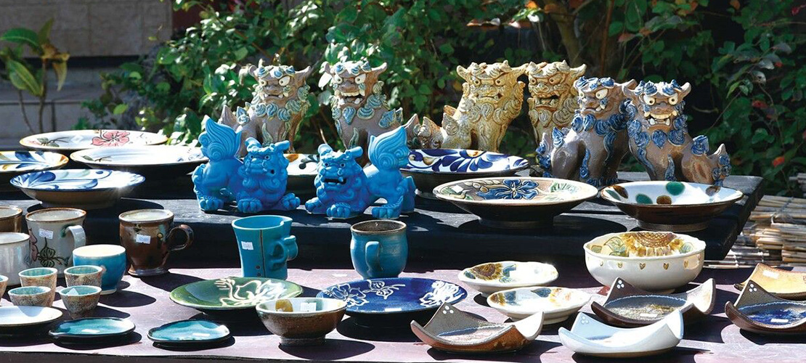
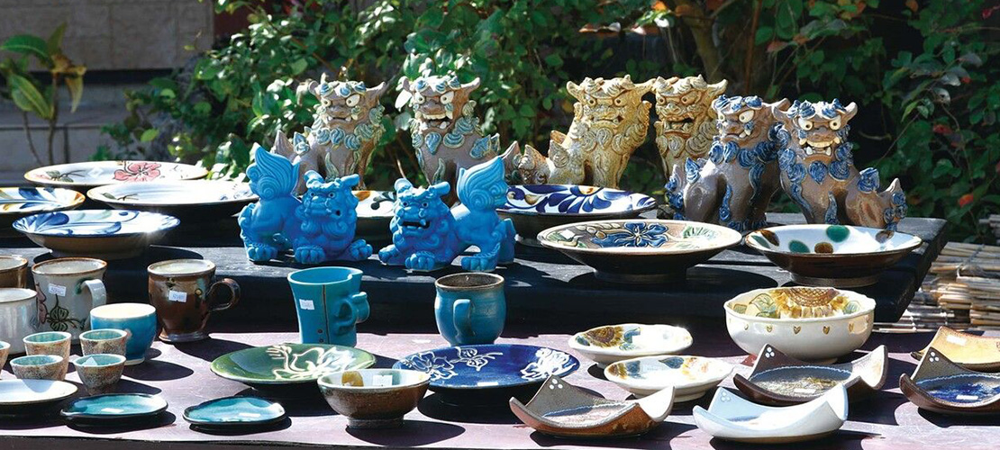

やちむんの里って？
やちむんの里は、沖縄県中頭郡読谷村座喜味にある、陶芸工房やショップ、ギャラリーなどが集まるエリアです。
沖縄の伝統工芸品であるやちむん（焼き物）を生産する窯元が集中しており、やちむんを購入したり、工房を見学したりすることができます。
読谷山焼の登り窯
やちむんの里は、「読谷壺屋焼」「読谷山焼」「読谷山焼北窯」の大きく分けて3つの窯からなっています。やちむんの里のシンボルでもある、赤瓦の「読谷山焼窯」は、1980年に名工4名が築いた共同の登り窯です。
VIEW MORE